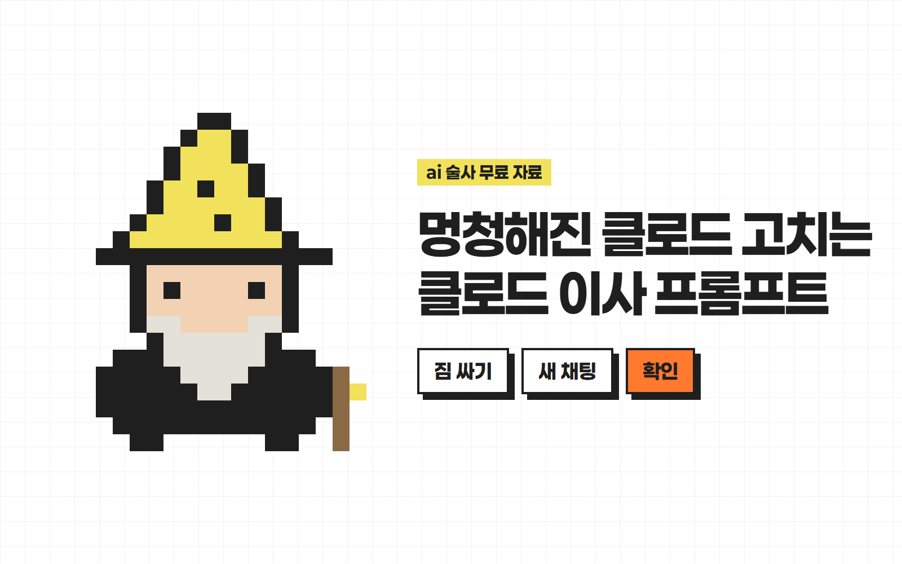
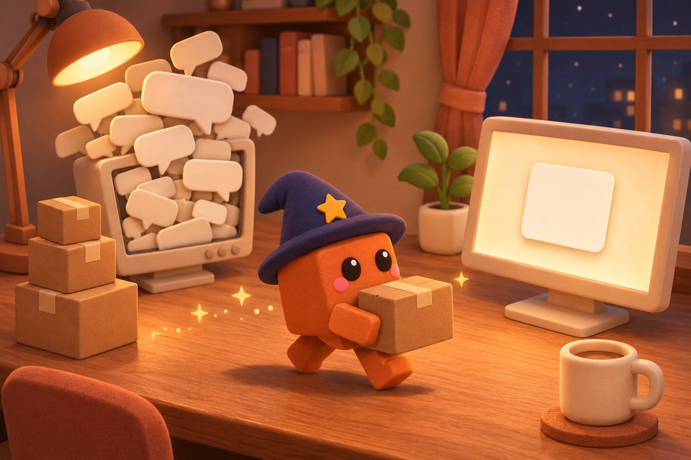

안녕하세요 ai 술사 성준입니다.
멍청해진 클로드 고치는
클로드 이사 프롬프트
클로드가 쓸수록 멍청해지는 느낌, 있죠?
했던 말은 무시하고, 엉뚱한 대답을 하고요.
싸우지 말고 새 채팅으로 이사시키면 돼요.
제가 초간단으로 알려드릴게요.

클로드가 게을러진 게 아니에요
대화가 길어지면 앞에서 한 말을 놓치기 시작해요.
짐 싸기는 프롬프트 한 번
대화하던 창에 아래 프롬프트를 붙여넣어요.
이 대화를 새 채팅에서 이어갈 수 있게 인수인계서를 마크다운으로 정리해줘. 파일을 만들 수 있으면 .md 파일로, 아니면 코드블록 하나로 줘. ① 목표 ② 확정한 결정 ③ 꼭 지킬 조건·숫자·문구 ④ 내가 싫다고 한 것 ⑤ 지금 진행 상황 ⑥ 다음 할 일 내가 확정한 것과 네가 제안만 한 것은 구분하고, 대화에 없는 내용은 추측하지 마. 맨 위에 "아래는 이전 대화의 인수인계서야. 읽고 이어서 진행해줘."라고 적어줘.
대화 핵심이 인수인계서(MD)로 정리돼 나와요.
새 채팅에 그대로 풀기
새 채팅을 열고 인수인계서를 붙여넣어요.
하던 얘기를 새 창에서 이어갈 수 있어요.
이 한마디로 이사 확인
새 채팅에 이렇게 물어봐요.
아까 했던 대화 내용 설명해봐
이전 대화를 설명해 주면 이사 끝이에요.
이때가 이사할 타이밍
- 앞에서 한 말을 놓치기 시작할 때
- 주제가 바뀔 때
정리본은 핵심만 담아요. 최종 문안처럼 긴 원문은 새 채팅에 따로 붙여주세요.
이럴 때 꺼내 쓰세요
- 기획안·대본처럼 며칠씩 이어지는 대화
- 수정 요청이 계속 쌓인 작업
- 하던 일을 다른 주제로 넘어가기 전에
궁금하신 점은 DM으로 편하게 물어봐 주세요 🪄
From. ai 술사 | 성준
ai술사의 모든 꿀팁 확인하기!